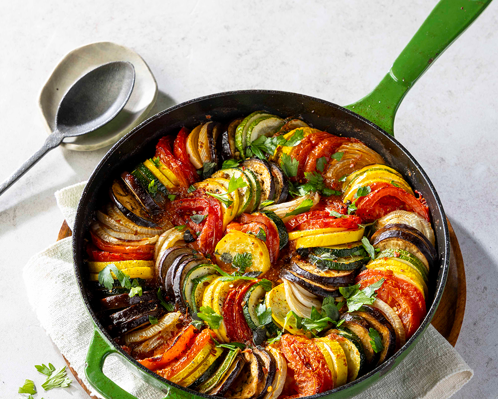

Welcome to our cooking space.where simple ingredients turn into memorable meals. This website is designed for everyone, from beginners taking their first steps in the kitchen to passionate home chefs looking to refine their skills. Each recipe is crafted with clear instructions, practical tips, and a focus on flavor, making cooking both approachable and enjoyable.
Our featured dish is Ratatouille, a vibrant and elegant classic from French cuisine. Known for its beautifully layered vegetables and rich, slow-cooked flavors, it represents the perfect balance of simplicity and technique. Whether you’re cooking for comfort or presentation, this dish captures the heart of what great cooking is all about.